Defeat them before they attack, with ranged or siege attacks only.
Fortified: Siege attacks only.
Double Fortified: untouchable.
Each attack is blocked separately: Block ≥ Attack.
Mind elements and resistances.
Swift: you need 2 × the Attack.
Unblocked attacks, one by one, onto Units and/or the Hero.
Every type of attack can be used here, even ranged and siege.
Group: sum of the Armors, combined Resistances.
Don't forget · Group: every Resistance of every enemy applies to the whole group. You may group enemies freely. Tip: isolate the resistant enemies.
efficient + ½ inefficient ≥ Armor
| Your attack | Inefficient if the enemy has |
|---|---|
| Physical | Physical Res. |
| Fire | Fire Res. |
| Ice | Ice Res. |
| Cold Fire | Fire and Ice Res. |
Cards played sideways give 1 physical Attack.
efficient + ½ inefficient ≥ Attack
| Enemy attack | Efficient Block |
|---|---|
| Physical | any |
| Fire | Ice, Cold Fire |
| Ice | Fire, Cold Fire |
| Cold Fire | Cold Fire only |
Block with no icon = physical.
Swift: 2 × the Attack.
Example: Ice Block 3 (efficient) + Physical Block 3 + Fire Block 2 (inefficient) against a Fire attack 6: 3 + (3 + 2) ÷ 2 = 3 + 2 = 5 < 6, the block fails.
Don't forget · Taking damage always means at least 1 Wound.
Exception · A Unit with Resistance to the attack's type AND an Armor ≥ the attack.
Paralyze: if wounded, it is destroyed.
Poison: if wounded, it takes 2 Wounds.
Assassination: Units may not absorb this damage, only the Hero can.
Brutal: damage × 2 first.
Damage ÷ Armor, rounded up
= number of Wounds
| Damage | Arm. 2 | Arm. 3 | Arm. 4 | Arm. 5 |
|---|---|---|---|---|
| 2 | 1 | 1 | 1 | 1 |
| 3 | 2 | 1 | 1 | 1 |
| 4 | 2 | 2 | 1 | 1 |
| 6 | 3 | 2 | 2 | 2 |
| 8 | 4 | 3 | 2 | 2 |
| 12 | 6 | 4 | 3 | 3 |
Wounds go into your hand.
Poison: +1 Wound in your discard pile per Wound received.
Paralyze: discard your non-Wound cards.
Knocked out: if the Wounds received during this combat reach your hand limit, discard all your non-Wound cards. The combat goes on.
Block: against Fire, only an Ice (or Cold Fire) Block is efficient. Ice Block 6: attack blocked. Physical Block 4 + Fire Block 4: both inefficient, (4 + 4) ÷ 2 = 4 < 6: not blocked.
Not blocked: 6 × 2 (Brutal) = 12 damage. The Unit absorbs 4 damage and takes 1 Wound: 8 left. The Hero takes 8 ÷ 3 = 2.67, rounded up = 3 Wounds.
Result: the Unit is wounded, the Hero adds 3 Wounds to their hand.
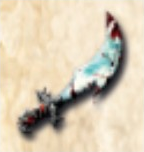
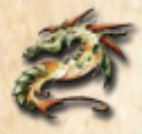
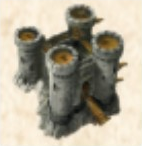
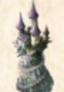
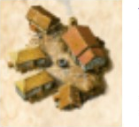
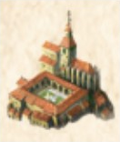
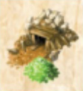
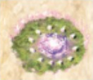
Rewards are received at the end of the turn · Crystal by die: gold = any color, black = 1 Fame · Artifact: draw 2, keep 1 · ● = danger.
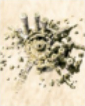
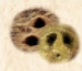
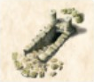
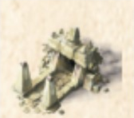
| City | Defender bonus | Interaction |
|---|---|---|
| White | +1 Armor | Any Unit type · 2 Influence → +1 Elite |
| Blue | Ice/Fire Attacks +2, Cold Fire +1 | 7 Influence + 1 mana → 1 Spell |
| Red | Brutal physical Attacks | 12 Influence → 1 Artifact |
| Green | Poison physical Attacks | 6 Influence → 1 Advanced Action |
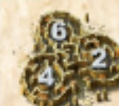
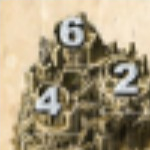
Partly conquered site: another player may enter it by another path. A player conquers a given Maze or Labyrinth only once; each path can only be conquered once. Game end: 2 Fame per Shield placed (Adventurer title).
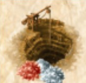
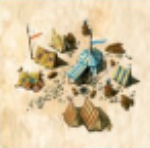
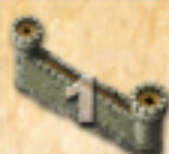
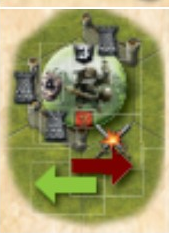
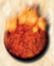
Efficient Block: Ice or Cold Fire.
Other Blocks ÷ 2.
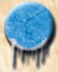
Efficient Block: Fire or Cold Fire.
Other Blocks ÷ 2.
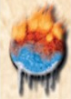
Efficient Block: Cold Fire only.
Other Blocks ÷ 2.
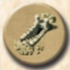
Block phase: a brown enemy is drawn to set the attack to block. It is then discarded.
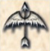
To block it, you need 2 × its Attack.
Unblocked: it deals 2 × its Attack in damage.
Unit: 2 Wounds.
Hero: for each Wound in hand, +1 Wound in the discard pile.
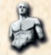
Wounded Unit = destroyed.
Wounded Hero = discard their non-Wound cards.
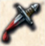
Only the Hero can take the damage.
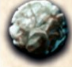
Block phase: Movement counts as Block points.
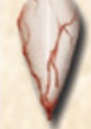
For the rest of this combat: +1 Armor per Unit wounded or Wound in hand caused by its attack.
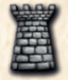
In the ranged phase, only siege attacks count.
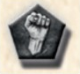
Physical attacks ÷ 2 (sideways cards too).
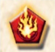
Fire Attack ÷ 2. Immune to red non-Attack effects.
Ice Attack ÷ 2. Immune to blue non-Attack effects.
As above, and Cold Fire attacks are also ÷ 2. Immune to red / blue non-Attack effects.
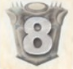
Lowest Armor value if all its attacks were blocked; otherwise the highest Armor value.
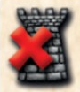
Ignores the site's fortifications.
Only Attacks, Blocks and effects on its attack affect it.
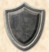
When you attack an enemy, +X to its Armor (once per combat).
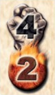
each one separately. Blocked if all of them are.
1. Movement (optional)
2. One Action (optional): combat or interaction.
No Movement, no Action. Discard 1 non-Wound card + as many Wounds as you like.
Only Wounds: discard 1 of them.
| Way | Cost | Effect |
|---|---|---|
| Basic | free | top text |
| Powered | 1 mana of its color | bottom text |
| Sideways | free | 1 Movement, Influence, Attack or Block |
| Spell | 1 mana of its color (+ black) | basic (powered, at Night) |
| Artifact | free (1 mana) | basic (powered, then destroyed) |
RedBlueGreenWhiteGoldBlack
| Terrain | Day | Night |
|---|---|---|
| Plains | 2 | 2 |
| Hills | 3 | 3 |
| Forest | 3 | 5 |
| Wasteland | 4 | 4 |
| Desert | 5 | 3 |
| Swamp | 5 | 5 |
| Lake, Mountain | impassable | |
The combat happens at once and becomes your Action. The two adjacent enemies before and after don't attack together. You may also challenge an adjacent enemy, as an Action, at the end of your Movement.
From a space on the edge of the map, spend 2 Movement: reveal the top tile of the pile and place it against that edge. No need to enter it: you may keep moving. Place the Enemy tokens on its sites (face down on fortified sites).
Gold die = joker, black die unusable.
Garrisons revealed when you are adjacent.
Gold die unusable, black mana usable.
Garrisons revealed only on assault.